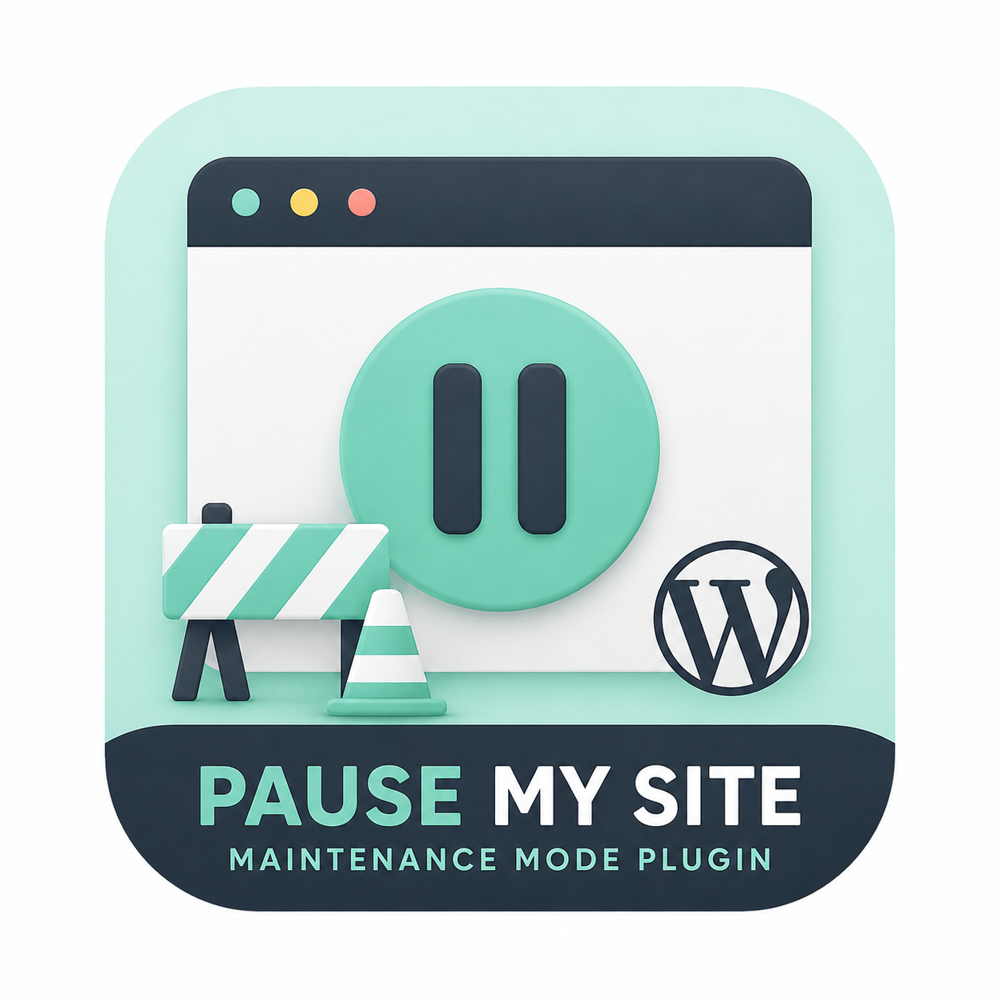
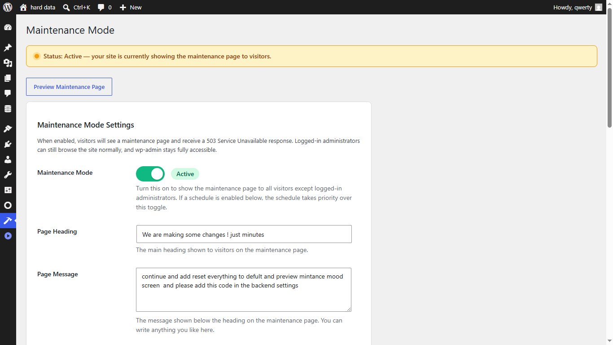
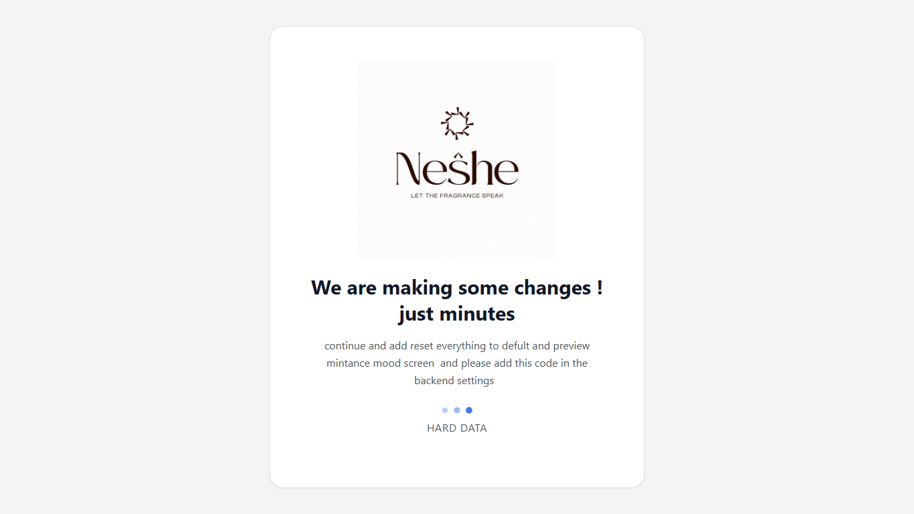
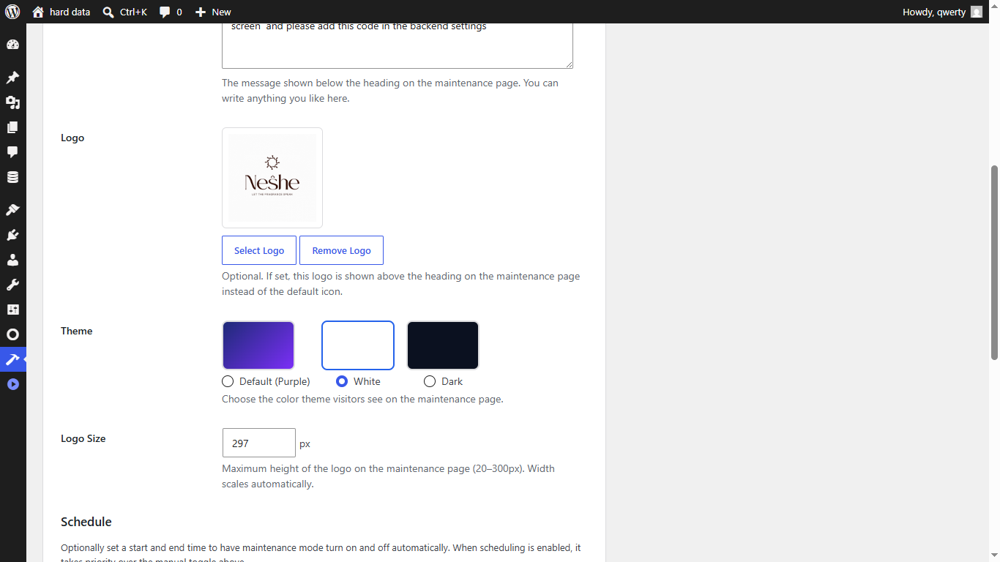
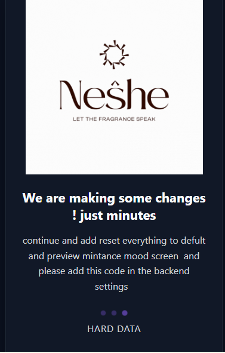
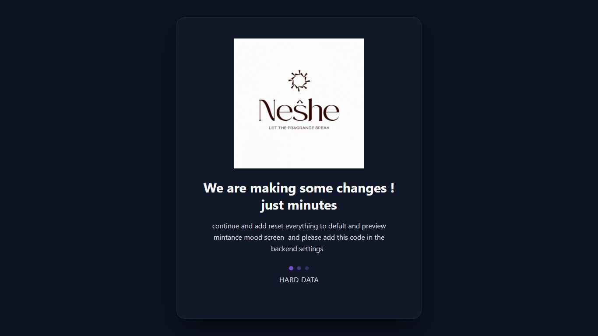
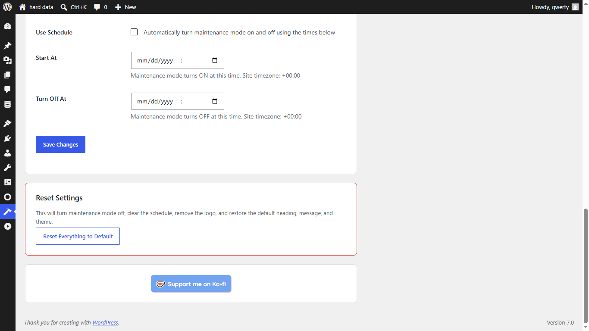

A clean and professional WordPress maintenance mode plugin designed to temporarily pause public access while you work behind the scenes. Customize your maintenance page, control visibility, and manage your website with confidence.

Pause My Site gives you complete freedom to personalize your maintenance page. Display your company logo, product artwork, promotional banner, or even an animated GIF to give visitors a more engaging experience while your website is temporarily unavailable.
You can use: PNG • JPG • SVG • WEBP • Animated GIFs





Turn maintenance mode on or off instantly from the dashboard.
Edit titles, descriptions, colors, backgrounds and more.
Visitors see maintenance mode while administrators continue working.
Configuration options.
Responsive experience.
Ready-to-use templates.
No. Your content remains untouched.
Yes.
Absolutely.
If your business needs a custom WordPress solution, we'd be happy to help.